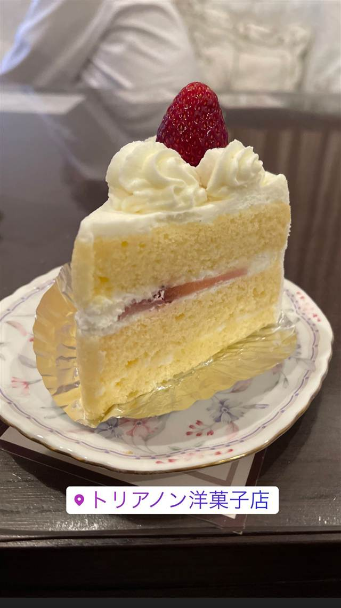

スイーツ · ケーキ・パフェ
トリアノン洋菓子店
REVIEWS
みんなの声
「昭和レトロな老舗の定番ケーキ」に注目
- いちごのショートケーキなど昔ながらの定番ケーキを評価する声が多い
- 昭和レトロな雰囲気の店内を懐かしいと評価する声が複数見られる
- 子どもの頃の誕生日ケーキとして親しんだ思い出の味だという声もある
食べログ・Retty・ホットペッパー
食べたもの：ショートケーキ
NEARBY

スイーツ · ケーキ・パフェ
REVIEWS
「昭和レトロな老舗の定番ケーキ」に注目
食べログ・Retty・ホットペッパー
食べたもの：ショートケーキ
NEARBY